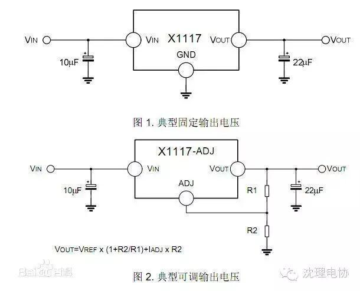

使用小程序
亲爱的小伙伴儿们，本周六又有活动啦！！！本周六，下午5点30,将对“电协杯”机器人比赛的规则及技巧进行讲解希望大家准时到场，未完成的小车可以带过去继续做！
活动地点信息129,信息130（本次活动分两个教室，孟凡宇，刘晓雨，张子祺，黄星宇，刘波，陈思，高翔，李帅，马天宝组在信息130,刘钟哲，李浩彬，谭子豪，喻鹏飞，关阳，赵晓宇，程贤兵，张强在信息129）。
下面给大家介绍下LM1117,LM1117是一个低压差电压调节器系列。其压差在1.2V输出，负载电流为800mA时为1.2V。它与国家半导体的工业标准器件LM317有相同的管脚排列。LM1117有可调电压的版本，通过2个外部电阻可实现1.25～13.8V输出电压范围。另外还有5个固定电压输出（1.8V、2.5V、2.85V、3.3V和5V）的型号。LM1117提供电流限制和热保护。电路包含1个齐纳调节的带隙参考电压以确保输出电压的精度在±1%以内。LM1117系列具有LLP、TO-263、SOT-223、TO-220和TO-252 D-PAK封装。输出端需要一个至少10uF的钽电容来改善瞬态响应和稳定性。
典型应用电路图
